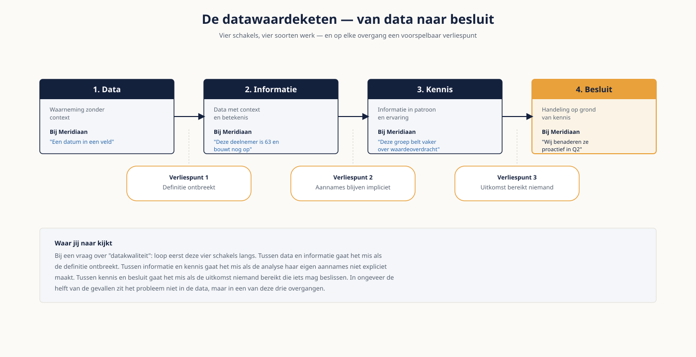

Deel 1 — Data als bedrijfsmiddel
Niveau 1 — Fundament · Reader
Voorbereiding, geen vervanging
Deze cursusmap is onafhankelijk ontwikkeld door Ductus B.V. Ductus is niet gelieerd aan, geaccrediteerd door of goedgekeurd door DAMA International, IIBA, IAPP, de EDM Association of Microsoft.
Dit materiaal bereidt voor op de genoemde examens en vervangt het officiële examenmateriaal niet. Bodies of knowledge, handboeken en examenblueprints worden hier niet gereproduceerd; deelnemers schaffen die bronnen zelf aan.
Alle genoemde merken zijn eigendom van hun respectieve houders. Examengegevens gecontroleerd in augustus 2026 — verifieer vóór inschrijving bij de bron.
1. Waar dit deel over gaat
Vrijwel elke organisatie zegt dat data haar belangrijkste bezit is. Vrijwel geen enkele organisatie behandelt data zoals ze haar gebouwen, haar geld of haar personeel behandelt: met een eigenaar, een onderhoudsbudget, een inventarislijst en iemand die verantwoording aflegt. Dat gat tussen wat men zegt en wat men doet, is waar dit vakgebied over gaat.
Dit eerste deel geeft je de taal. Aan het eind weet je wat de begrippen betekenen, welke rollen er bestaan, hoe de drie disciplines — datamanagement, data-analyse en data governance — zich tot elkaar verhouden, en waar in dat landschap jouw eigen werk zit. Dat klinkt bescheiden, maar in de praktijk lopen de meeste gesprekken vast op precies dit punt: twee mensen gebruiken hetzelfde woord voor iets anders.
Leerdoelen
- Je legt uit waarom data zich anders gedraagt dan andere bedrijfsmiddelen, en wat dat betekent voor beheer.
- Je beschrijft de datawaardeketen van bron tot besluit en wijst aan waar waarde verloren gaat.
- Je onderscheidt datamanagement, data-analyse en data governance en benoemt per vraagstuk waar het thuishoort.
- Je benoemt de kennisgebieden van het vakgebied en kunt een praktijkvraag aan het juiste gebied koppelen.
- Je onderscheidt de rollen owner, steward, custodian, producer en consumer, ook in Engelstalige examentermen.
- Je beschrijft de levensloop van een gegeven en benoemt per fase wie er iets over te zeggen heeft.
2. Van data naar besluit
Data op zichzelf is waardeloos. De waarde ontstaat pas in de keten die eindigt bij een besluit — en die keten heeft vier schakels die je goed uit elkaar moet houden, omdat elke schakel een ander soort werk vraagt.
| Schakel | Wat het is | Voorbeeld bij Meridiaan | Wie werkt eraan |
|---|---|---|---|
| Data | Waarneming zonder context | Een geboortedatum, een bedrag, een datum in een veld | Bronsysteem, invoerende medewerker |
| Informatie | Data met context en betekenis | "Deze deelnemer is 63 en bouwt nog op" | Datamodelleur, steward |
| Kennis | Informatie in patroon en ervaring | "Deelnemers rond deze leeftijd bellen vaker over waardeoverdracht" | Analist |
| Besluit | Handeling op grond van kennis | "Wij benaderen deze groep proactief in het tweede kwartaal" | Manager, bestuur |
De verliespunten zitten voorspelbaar op de overgangen. Tussen data en informatie gaat het mis als de definitie ontbreekt — dan weet niemand precies wat er in het veld staat. Tussen informatie en kennis gaat het mis als de analyse haar eigen aannames niet expliciet maakt. Tussen kennis en besluit gaat het mis als de uitkomst niemand bereikt die iets mag beslissen.
Waar jij naar kijkt
Als je bij een opdrachtgever binnenkomt met een vraag over "datakwaliteit", loop dan eerst deze vier schakels langs. In ongeveer de helft van de gevallen zit het probleem niet in de data maar in de ontbrekende definitie, of in het feit dat de uitkomst niemand bereikt die er iets mee mag.

3. Waarom data zich anders gedraagt
Data een bedrijfsmiddel noemen is nuttig, maar de analogie is niet volledig. Vijf eigenschappen maken data lastiger te beheren dan een gebouw of een machine.
- Data raakt niet op door gebruik. Twee afdelingen kunnen dezelfde gegevens tegelijk gebruiken zonder elkaar te hinderen — wat betekent dat schaarste niet vanzelf tot afstemming dwingt.
- De waarde zit in gebruik, niet in bezit. Een archief dat niemand raadpleegt, kost geld en levert niets op.
- De kwaliteit verslechtert vanzelf. Adressen verhuizen, definities schuiven, bronsystemen veranderen. Zonder onderhoud vervalt data, ook als er niemand aan komt.
- Kopiëren is gratis en dus gebeurt het. Elke kopie is een nieuwe plek waar een afwijking kan ontstaan en een nieuw risico bij een datalek.
- De waarde is contextafhankelijk. Dezelfde gegevens zijn voor de ene afdeling goud en voor de andere onbruikbaar, omdat "goed genoeg" per gebruik verschilt.
Die laatste eigenschap heeft een naam die je vaker zult horen: geschiktheid voor gebruik. Datakwaliteit is geen absolute eigenschap van een dataset maar een oordeel over de vraag of die dataset geschikt is voor een specifiek doel. Een deelnemersbestand dat prima is voor een nieuwsbrief kan volstrekt onbruikbaar zijn voor een toezichtsrapportage.
4. Drie disciplines, één landschap
De cursus heet niet voor niets datamanagement, data-analyse én data governance. In de praktijk lopen ze door elkaar, maar ze beantwoorden verschillende vragen en trekken verschillende mensen aan.
| Discipline | Beantwoordt | Typisch product | Faalt als |
|---|---|---|---|
| Datamanagement | Is de data er, klopt hij, en kan ik erbij? | Datamodel, koppelvlak, kwaliteitsrapport | Er data is die niemand vertrouwt |
| Data-analyse | Wat betekent dit en wat moeten we doen? | Analyse, dashboard, voorspelling, advies | Een mooie grafiek geen besluit oplevert |
| Data governance | Wie beslist wat, en wie legt verantwoording af? | Beleid, besluitrechtenmatrix, begrippenkader | Er niets verandert na het besluit |
De samenhang is eenvoudiger dan de literatuur soms doet vermoeden. Governance bepaalt de spelregels, datamanagement zorgt dat de data aan die regels voldoet, analyse haalt er waarde uit. Ontbreekt governance, dan werkt datamanagement zonder opdracht. Ontbreekt datamanagement, dan analyseert de analist ruis. Ontbreekt analyse, dan onderhoudt de organisatie data waar niemand iets mee doet.
5. Het kennislandschap
Het vakgebied is ingedeeld in kennisgebieden. Je hoeft ze in dit deel niet te beheersen — dat gebeurt in de rest van niveau 1 — maar je moet ze kunnen benoemen en een praktijkvraag aan het juiste gebied kunnen koppelen. Dat is precies wat het examen van je vraagt.
| Kennisgebied | Gaat over | Behandeld in |
|---|---|---|
| Data governance | Besluitrechten, beleid, verantwoording | Deel 7 en 16 |
| Data-architectuur | Samenhang van data in het landschap | Deel 8 en 22 |
| Data modeling & design | Betekenis vastleggen in modellen | Deel 2 en 12 |
| Data storage & operations | Opslag, beschikbaarheid, beheer | Deel 3 |
| Data security | Toegang, classificatie, bescherming | Deel 7 en 17 |
| Data integration & interoperability | Data verplaatsen en laten samenwerken | Deel 3 |
| Document & content management | Ongestructureerde informatie | Deel 8 |
| Reference & master data | Eén waarheid over kernobjecten | Deel 8 en 14 |
| Data warehousing & BI | Data geschikt maken voor sturing | Deel 3 en 6 |
| Metadata | Data over data: betekenis en herkomst | Deel 8 en 13 |
| Data quality | Geschiktheid voor gebruik, meten en verbeteren | Deel 4 en 15 |
| Big data & data science | Analyse op schaal, modellen | Deel 5 en 27 |
| Datamanagementproces | Programma, volwassenheid, organisatie | Deel 1 en 11 |
| Ethiek | Wat mag en wat hoort | Deel 7 en 26 |
6. Rollen
Vijf rollen komen overal terug. Ze zijn geen functies: één persoon vervult er vaak meerdere, en een rol kan bij een afdeling liggen in plaats van bij een individu. Wat telt is dat elke rol aanwijsbaar belegd is.
| Rol | Engels | Verantwoordelijk voor | Herken je aan |
|---|---|---|---|
| Data-eigenaar | data owner | Eindverantwoordelijk voor een datadomein: betekenis, kwaliteitsnorm, toegang | Mag "nee" zeggen tegen een verzoek om toegang |
| Databeheerder | data steward | Dagelijks beheer van betekenis en kwaliteit; eerste aanspreekpunt | Weet als enige waarom dat veld zo heet |
| Technisch beheerder | data custodian | Opslag, back-up, beschikbaarheid, technische toegang | Zit bij IT en wordt te vaak aangesproken op inhoud |
| Databron | data producer | Legt de gegevens vast in een bronsysteem | Merkt zelf nooit iets van de fout die hij veroorzaakt |
| Datagebruiker | data consumer | Correct gebruik binnen de afgesproken context | Bouwt de rapportage waarover het misgaat |
De valkuil die je vandaag al leert herkennen
De data producer merkt zelden iets van de gevolgen van zijn eigen invoerfout, en de data consumer kan er niets aan doen. Daar zit vrijwel altijd de kern van een datakwaliteitsprobleem: de kosten vallen ergens anders dan de oorzaak. Governance bestaat onder meer om die twee weer met elkaar in gesprek te brengen.
7. De levensloop van een gegeven
Elk gegeven doorloopt dezelfde fasen. Wie de fasen kent, weet ook waar de risico’s zitten en wie er per fase iets over te zeggen heeft.
| Fase | Wat er gebeurt | Typisch risico |
|---|---|---|
| Creëren of verwerven | Vastleggen bij de bron, of inkopen bij derden | Geen validatie bij invoer; onduidelijke herkomst |
| Opslaan | Vastleggen in een systeem, met structuur | Meerdere plekken, geen aangewezen bron van waarheid |
| Gebruiken | Raadplegen, bewerken, analyseren | Gebruik buiten de context waarvoor het bedoeld was |
| Delen | Doorgeven binnen of buiten de organisatie | Delen zonder grondslag of zonder afspraken |
| Archiveren | Bewaren zonder actief gebruik | Bewaartermijn nooit vastgesteld |
| Vernietigen | Aantoonbaar verwijderen | Nooit gebeurd; kopieën blijven achter |
Twee fasen worden structureel vergeten: archiveren en vernietigen. Dat is geen detail. Onder de AVG is bewaren zonder doel niet toegestaan, en elke bewaarde kopie vergroot de schade bij een incident. Wie een datalandschap saneert, boekt hier vaak de snelste winst.
8. Begrippenkader
Op het examen zijn de Engelse termen leidend. In je opdracht is dat vaak het Nederlands. Leer ze naast elkaar — en let op de begrippen waar de vertaling misleidt.
| Nederlands | Engels | Let op |
|---|---|---|
| Gegeven / data | data | In het Nederlands vaak enkelvoud, in het Engels meervoud |
| Datadomein | data domain | Een samenhangend gebied als Deelnemer of Werkgever, geen systeem |
| Kritiek data-element | critical data element (CDE) | De handvol velden waar het echt om draait |
| Bron van waarheid | system of record | Het aangewezen systeem, niet per se het eerste systeem |
| Stamgegevens | master data | Kernobjecten: deelnemer, werkgever, product |
| Referentiegegevens | reference data | Codelijsten en classificaties |
| Herkomst | lineage | Het pad van bron tot rapport |
| Begrippenkader | business glossary | Definities in bedrijfstaal, niet in techniek |
| Volwassenheid | maturity | Meting van hoe goed het vak is ingericht |
9. Vier patronen waaraan je het herkent
- Dezelfde vraag levert bij drie afdelingen drie antwoorden op. Er ontbreekt een definitie of een aangewezen bron van waarheid.
- Niemand kan zeggen waar een getal in een rapportage vandaan komt. Er ontbreekt herkomst.
- Elke wijziging in een bronsysteem breekt iets stroomafwaarts. Er ontbreekt zicht op afhankelijkheden.
- Er is veel data en weinig vertrouwen. Meestal ontbreekt niet de kwaliteit maar de verantwoording erover.
10. Examenrelevantie
Dit deel bereidt voor op de vragen over het datamanagementproces en op de terminologievragen die door het hele CDMP Fundamentals-examen verspreid zitten. De begrippen zijn ontleend aan de DAMA-DMBOK2 Revised Edition; de daar gehanteerde definities zijn op het examen leidend, ook waar de Nederlandse praktijk andere woorden gebruikt.
Aandachtspunten
- Owner, steward en custodian foutloos uit elkaar houden — hier vallen op het examen de meeste punten weg.
- Het onderscheid tussen data, informatie en kennis in de bewoordingen van het DMBOK.
- De namen van de kennisgebieden in het Engels; vragen verwijzen ernaar zonder uitleg.
- Master data versus reference data — een klassiek verwarpaar.
- Datakwaliteit als geschiktheid voor gebruik, niet als absolute maat.
Studiemateriaal bij dit deel
Kernbron: de inleidende hoofdstukken van de DAMA-DMBOK2 Revised Edition. Schaf deze zelf aan — tijdens het examen is dit het enige toegestane hulpmiddel, in papier óf digitaal, niet beide.
Toegankelijke opstap: Navigating the Labyrinth van Laura Sebastian-Coleman, bedoeld als introductie op de DMBOK en niet als vervanging ervan.
Examenopzet, kosten en wegingen: cdmp.info/exams en dama.org/certification.
Dit materiaal reproduceert geen van deze bronnen en vervangt ze niet.
11. Casus — Meridiaan Pensioen N.V.
Deze casus loopt door het hele programma mee en wordt per niveau complexer. Lees hem vóór de klassikale sessie.
De organisatie
- Nederlandse pensioenuitvoerder, ongeveer 1.200 medewerkers, circa 380.000 deelnemers, onder toezicht van DNB.
- Vier businessdomeinen: Deelnemers, Werkgevers, Beleggingen en Financiën.
- De polisadministratie is vijfendertig jaar oud. Twee jaar geleden is een cloud-dataplatform in gebruik genomen; de migratie loopt nog.
Wat er speelt
- Drie afdelingen rapporteren verschillende deelnemersaantallen over hetzelfde kwartaal.
- Er blijken vier definities van "actieve deelnemer" in omloop.
- De begrippenlijst staat in een spreadsheet met ruim vierhonderd termen; niemand is er eigenaar van.
- Een klantcontactmedewerker vult bij een onbekend e-mailadres standaard hetzelfde adres in, omdat het veld verplicht is.
- De marketingafdeling gebruikt het deelnemersbestand voor een campagne; niemand heeft gecontroleerd of dat mag.
Vier van die vijf punten zijn geen technisch probleem. Dat is de observatie waarmee dit deel eindigt en waarmee de rest van niveau 1 begint.